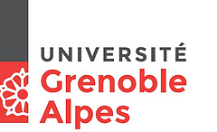

|
Marcelo Forets Post-doc researcher at TEMPO team led by Oded Maler. VERIMAG, Universite Grenoble Alpes |
 | ||||
|
Office: 209 IMAG Building Address: Bat. IMAG, 700 Av. Centrale, 38041, France. Tel: +33 (0)6 47 91 43 65 Email: marcelo dot forets at imag dot fr |
Topics of current research activity include:
The topics of my PhD thesis include :